기계조립산업기사 (2012-09-15 기출문제)
1과목: 기계가공법 및 안전관리
1. 어미자의 1눈금이 0.5mm이며 아들자의 눈금이 12mm를 25등분한 버니어 캘리퍼스의 최소 측정값은?
- 0.01mm
- 0.⑤mm
- 0.02mm
- 0.1mm
(정답률: 70%)

2. 바이트의 여유각을 주는 가장 큰 이유는?
- 바이트의 날끝과 공작물 사이의 마찰을 줄이기 위하여
- 공작물의 깍이는 깊이를 적게하고 바이트의 날 끝이 부러지지 않도록 보호하기 위하여
- 바이트가 공작물을 깍는 쇳가루 흐름을 잘되게 하기 위하여
- 바이트의 재질이 강한 것이기 때문에
(정답률: 67%)
3. 다음 그림과 같은 공작물의 테이퍼를 선반의 공구대를 회전시켜 가공하려고 한다. 이 때 복식 공구대의 회전각은?
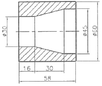
- 약 10도
- 약 12도
- 약 14도
- 약 18도
(정답률: 50%)
4. 밀링에서 상향절삭과 하향절삭의 비교 설명으로 맞는 것은?
- 상향절삭은 절삭력이 상향으로 작용하여 가공물 고정이 유리하다.
- 상향절삭은 기계의 강성이 낮아도 무방하다.
- 하향절삭은 상향절삭에 비하여 공구 마모가 빠르다.
- 하향절삭은 백래시(back lash)를 제거할 필요가 없다.
(정답률: 58%)
5. 물체의 길이, 각도, 형상측정이 가능한 측정기는?
- 표면 거칠기 측정기
- 3차원 측정기
- 사인 센터
- 다이얼게이지
(정답률: 89%)
6. 연성 재료를 고속절삭할 때 생기는 칩의 형태는?
- 유동형(flow type)
- 균열형(crack type)
- 열단형(tear type)
- 전단형(shear type)
(정답률: 73%)
7. 다음 중 다이얼 게이지(dial gauge)의 특징이 아닌 것은?
- 다원측정의 검출기로서 이용할 수 있다.
- 눈금과 지침에 의해서 읽기 때문에 오차가 적다.
- 연속된 변위량의 측정이 가능하다.
- 측정범위가 넓고, 직접제품의 치수를 읽을 수 있다.
(정답률: 62%)
8. 면판불이 주축대 2대를 마주 세운 구조형으로 된 선반은?
- 차축선반
- 차륜선반
- 공구선반
- 직립선반
(정답률: 75%)
9. 브로칭머신에서 브로치를 인발 또는 압입하는 방법에 속하지 않는 것은?
- 나사식
- 기어식
- 유압식
- 압출식
(정답률: 58%)
10. 연한 갈색으로 일반 강의 연삭에 사용하는 연삭숫돌의 재질은?
- A 숫돌
- WA 숫돌
- C 숫돌
- GC 숫돌
(정답률: 32%)
11. 밀링작업에서 일감의 가공면에 떨림(chattering)이 나타날 경우 그 방지책으로 적합하지 않는 것은?
- 밀링커터의 정밀도를 좋게 한다.
- 일감의 고정을 확실히 한다.
- 절삭조건을 개선한다.
- 회전속도를 빠르게 한다.
(정답률: 80%)
12. CNC 프로그래밍에서 좌표계 주소(Address)와 관련이 없는 것은?
- X, Y, Z
- A, B, C
- I, J, K
- P, U, X
(정답률: 80%)
13. 피측정물과 표준자와의 측정방향에 있어서 1직선 위에 배치하여야 한다는 것은?
- 헤르츠의 법칙
- 후크의 법칙
- 에어리점
- 아베의 원리
(정답률: 78%)
14. 벨트를 플리에 걸 때는 어떤 상태에서 해야 안전한가?
- 저속 회전 상태
- 중속 회전 상태
- 회전 중지 상태
- 고속 회전 상태
(정답률: 84%)
15. 절삭속도가 140m/min, 이송이 0.25mm/rev인 절삭조건을 사용하여 ø80mm인 환봉을 ø75mm로 1회 절삭하려고 할 때 소요되는 가공시간은 약 몇 분인가? (단, 절삭 길이는 300mm이다.)
- 2분
- 4분
- 6분
- 8분
(정답률: 43%)
16. 방전가공에서 전극재료의 조건으로 맞지 않는 것은?
- 방전이 안전하고 가공속도가 클 것
- 가공에 따른 가공전극의 소모가 적을 것
- 공작물보다 경도가 높을 것
- 기계가공이 쉽고 가공정밀도가 높을 것
(정답률: 63%)
17. 판재 또는 포신 등의 큰 구멍 가공에 적합한 보링머신은?
- 코어 보링머신
- 수직 보링머신
- 보통 보링머신
- 지그 보링머신
(정답률: 73%)
18. 연삿숫돌의 집자 중 천연임자가 아닌 것은?
- 석영
- 코런덤
- 다이아몬드
- 알루미나
(정답률: 74%)
19. 일반적으로 밀링머신의 크기는 호칭번호로 표시하는데 그 기준은 무엇인가?
- 기계의 중량
- 기계의 설치면적
- 테이블의 이동거리
- 주축모터의 크기
(정답률: 89%)
20. 연삭숫돌을 고무 해머로 때려 검사한 결과 울림이 없거나 둔탁한 소리가 나는 것은?
- 완전한 숫돌
- 균열이 생긴 숫돌
- 두께가 두꺼운 숫돌
- 두께가 얇은 숫돌
(정답률: 67%)
2과목: 기계설계 및 기계재료
21. Al-Cr-Mo강을 가스질화 할 때 처리온도로 적당한 것은?
- 370~450℃
- 500~550℃
- 650~700℃
- 850~900℃
(정답률: 56%)
22. 줄(File)의 재질로는 보통 어떤 강을 사용하는가?
- 고속도강
- 탄소공구강
- 초경합금강
- 톰백
(정답률: 58%)
23. 백주철을 고온에서 장시간 열처리하여 시멘타이트 조직을 분해하거나 소실시켜 인성 또는 연성을 개선한 주철은?
- 가단 주철
- 칠드 주철
- 구상흑연 주철
- 합금 주철
(정답률: 74%)
24. 금반지를 18(K)금으로 만들었다. 순금(Au)은 몇 %가 함유된 것인가?
- 18
- 34
- 75
- 100
(정답률: 77%)
25. 풀림 처리의 목적으로 가장 적합한 것은?
- 연화 및 내부응력 제거
- 경도의 증가
- 조직의 오스테나이트화
- 표면의 경화
(정답률: 85%)
26. 일반적으로 금속재료에 비하여 세라믹의 특징으로 옳은 것은?
- 인성이 풍부하다.
- 내산화성이 양호하다.
- 성형성 및 기계가공성이 좋다.
- 내충격성이 높다.
(정답률: 53%)
27. 다음 중 아공석강에서 탄소강의 탄소함유량이 증가할 때 기계적 성질을 설명한 것으로 틀린 것은?
- 인장강도가 증가한다.
- 경도가 증가한다.
- 항복점이 증가한다.
- 연신율이 증가한다.
(정답률: 80%)
28. 일반적인 합금의 성질을 설명한 것으로 틀린 것은?
- 전기 전도율이나 열전도율이 낮아진다.
- 강도와 경도가 커지고 전성과 연성이 작아진다.
- 용해점이 높아진다.
- 담금질 효과가 크다.
(정답률: 57%)
29. 탄소강을 담금질할 때 이용하는 냉각제 중에서 냉각성능이 큰 것부터 나열된 것은?
- 10%식염수＞기름＞물
- 물＞기름＞10% 식염수
- 10% 식염수＞물＞기름
- 기름＞물＞10% 식염수
(정답률: 96%)
30. 구리합금 중 6:4 황동에 약 0.8% 정도의 주석을 첨가하며 내해수성이 강하기 때문에 선박용 부품에 사용하는 특수 황동은?
- 네이벌 황동
- 강력 황동
- 납 황동
- 애드미럴티 황동
(정답률: 83%)
31. 다음 중 전달할 수 있는 회전력의 크기가 가장 큰 키(key)는?
- 접선 키
- 안장 키
- 평행 키
- 둥근 키
(정답률: 42%)
32. 다음 중 자동 하중 브레이크에 속하는 것은?
- 밴드 브레이크(band brake)
- 블록 브레이크(block brake)
- 윔 브레이크(worm brake)
- 원추 브레이크(cone brake)
(정답률: 69%)
33. 축의 지름에 비하여 길이가 짧은 축을 말하며, 비틀림과 굽힘을 동시에 받는 축으로 공작기계의 주축 및 터빈 축등에 사용하는 것은?
- 차축(axle shaft)
- 전동축(transmission shaft)
- 스핀들(spindle)
- 유연성 축(flexivble shaft)
(정답률: 75%)
34. 스프링 코일의 평균지름 60mm, 유효권수 10, 소재 지름 6mm, 가로탄성계수(G)는 78.48GPa이고, 이 스프링에 하중 490N을 받을 때 코일 스프링의 처짐은 약 몇 mm가 되는가?
- 6.67
- 83.2
- 8.3
- 66.7
(정답률: 29%)
35. 풀리의 지름 200mm, 회전수 1600rpm으로 4kW의 동력을 전달할 때 벨트의 유효 장력은 약 몇 N인가? (단, 원심력과 마찰은 무시한다.)
- 24
- 93
- 239
- 527
(정답률: 47%)
36. 구름 베어링 중에서 가장 널리 사용되는 것으로 구조가 간단하고 정밀도가 높아서 고속 회전용으로 적합한 베어링은 어느 것인가?
- 깊은 홈 볼 베어링
- 마그네토 볼 베어링
- 앵귤러 볼 베어링
- 자동 조심 볼 베어링
(정답률: 62%)
37. 리벳이음에서 리벳 지름을 d, 피치를 p라 할 때 강판의 효율 η 옳은 것은? (단, 1줄 리벳 겹치기 이음이다.)
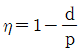
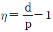
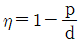
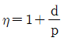
(정답률: 53%)
38. 이론적으로 사각나사의 효율을 최대로 하는 리드각(λ)은 얼마인가? (단, ρ는 마찰각이다.)
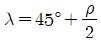
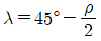
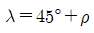
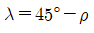
(정답률: 53%)
39. 지름이 2cm의 봉재의 인장하중이 400N이 작용할 때 발생하는 인장응력은 약 얼마인가?
- 127.3N/cm2
- 127.3N/mm2
- 172.8N/cm2
- 172.8N/mm2
(정답률: 63%)
40. 표준 스퍼기어에서 모듈 5, 잇수 17개, 압력각이 20°라고 할 때, 법선피치(pn)은 약 몇 mm인가?
- 18.2
- 14.8
- 15.6
- 12.4
(정답률: 20%)
3과목: 기계제도 및 CNC 공작법
41. Tr 40×7-6H로 표시된 나사의 설명 중 틀린 것은?
- Tr:미터 사다리꼴나사
- 40:호칭지름
- 7:나사산의 수
- 6H:나사의 등급
(정답률: 77%)
42. 그림과 같은 축 A와 부시 B의 끼워 맞춤에서 최소 틈새가 0.30mm이고, 축의 공차가 0.30mm일 때, 축 A의 최대치수와 최소치수는?
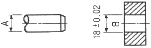
- 최대 : 17.58mm, 최소 : 17.38mm
- 최대 : 17.68mm, 최소 : 17.48mm
- 최대 : 18.38mm, 최소 : 18.08mm
- 최대 : 18.58mm, 최소 : 18.38mm
(정답률: 50%)
43. KS 기계제도에서 특수한 용도의 선으로 가는 실선을 사용하는 경우가 아닌 것은?
- 위치를 명시하는데 사용한다.
- 얇은 부분의 단면도시를 명시하는데 사용한다.
- 평면이라는 것을 나타내는데 사용한다.
- 외형선 및 숨은선의 연장을 표시하는데 사용한다.
(정답률: 22%)
44. 같은 직선상에 있을 축선과 기준축과의 차를 표시하는 등축도를 나타내는 기호는?
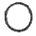
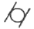
(정답률: 59%)
45. 그림과 같은 표면의 결 도시기호에서 “X"는 무엇을 나타내는가?
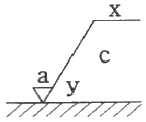
- 가공 방법의 기로
- 줄무늬 방향의 기호
- 표면 거칠기의 상한치
- 기준길이 또는 평가길이
(정답률: 59%)
46. 그림과 같은 입체도에서 화살표 방향에서 본 정면도를 가장 올바르게 나타낸 것은?
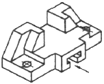
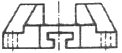
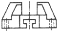
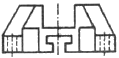
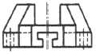
(정답률: 94%)
47. MA4916V의 베어링 호칭표시에서 NA는 무엇을 나타내는가?
- 복렬 원통 롤러 베어링
- 스러스트 롤러 베어링
- 테이퍼 롤러 베어링
- 니들 롤러 베어링
(정답률: 73%)
48. 다음 ()안에 적절한 것은?
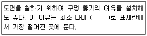
- 5mm
- 10mm
- 15mm
- 20mm
(정답률: 71%)
49. 기계제도 도면을 그리다 보면 선이 우연히 겹치는 경우가 많다. 답항의 선들이 모두 겹쳤을 때에 가장 우선적으로 나타내야 하는 선은?
- 절단선
- 무게 중심선
- 치수 보조선
- 숨은선
(정답률: 73%)
50. 재료 기호가 "STC140"으로 되어 있을 때 이 재료의 명칭으로 옳은 것은?
- 합금 공구강 강재
- 탄소 공구강 강재
- 기계구조용 탄소 강재
- 탄소강 주강품
(정답률: 77%)
51. CNC 공작기계의 일반적인 특징으로 틀린 것은?
- 품질이 균일한 생산품을 얻을 수 있으나 고장 발생 시 자기진단이 어렵다.
- 공작기계가 공작물을 가공 중에도 파트 프로그램 수정이 가능하다.
- 인치 단위의 프로그램을 쉽게 미터 단위로 자동 변환할 수 있다.
- 파트 프로그램을 매크로 형태로 저장시켜 필요시 불러 사용할 수 있다.
(정답률: 53%)
52. 다음 중 CNC의 제어방법에서 직선 보간이나 원호 보간등에 사용되고 있응 펄스 분배 방식이 아닌 것은?
- DDA 방식
- 대수연산 방식
- MIT 방식
- 증분절대좌표 방식
(정답률: 60%)
53. ISO 선삭용 인서트의 형번 표기법(ISO)에서 및줄 친 C가 나타내는 것은?
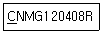
- 공차
- 노즈 반경
- 인서트 현상
- 여유각
(정답률: 84%)
54. CNC 방전가공의 일반적인 특징으로 틀린 것은?
- 열에 의한 변형이 적으므로 가공 정밀도가 우수하다.
- 전극으로 구리, 황동, 흑연 등을 사용하므로 성형이 용이하다.
- 강한 재료, 부도체 재료, 담금질 재료의 가공도 용이하다.
- 미세한 구멍, 얇은 두께의 재질을 가공해도 변형이 생기지 않는다.
(정답률: 71%)
55. 지름이 ø30mm인 재료를 CNC선반에서 절삭할 때 주축의 회전수가 1000rpm이면 절삭속도는 약 몇 m/min인가?
- 942
- 94.2
- 1884
- 188.4
(정답률: 43%)
56. 그림과 같이 R15인 반원을 A점에서 B점까지 가공하는 증분 지령으로 작성된 CNC프로그램으로 올바른 것은?
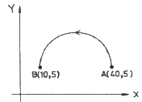
- G91 G03 X-30. I-15. ;
- G91 G03 X10. Y5. I-15. ;
- G91 G03 X-30. I7.5 ;
- G91 G03 X10. Y5. J-7.5 ;
(정답률: 59%)
57. CNC 프로그램에서 가공물과 공구와의 상대 속도를 지정하는 기능은?
- 주축기능(S)
- 준비기능(G)
- 이송기능(F)
- 공구기능(T)
(정답률: 60%)
58. CNC선반에서 100rpm으로 회전하는 스핀들에 2회전 휴지(dwell)를 주기 위한 CNC프로그램은?
- G04 X12
- G04 X0.12
- G04 X1.2
- G04 X12.5
(정답률: 50%)
59. CNC 공작기계 작업 중 이상이 발생했을 때 조치 내용으로 알맞지 않는 것은?
- 비상 정지 스위치를 즉시 누른다.
- 작업을 멈추고 원인을 확인 제거한다.
- 파라미터를 삭제한다.
- 경보(alarm) 내용을 확인 수정한다.
(정답률: 90%)
60. 공구지름 보정 무시 상태에서 공구지름 보정을 지령한 불록을 의미하는 것은?
- cancel block
- single block
- start up block
- slash block
(정답률: 69%)